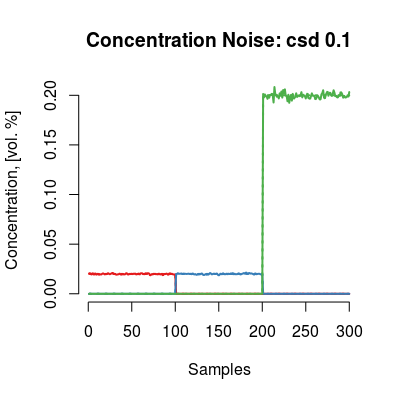
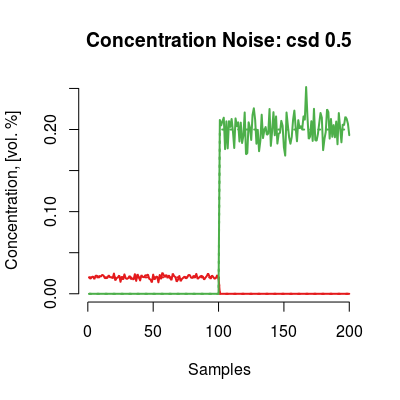
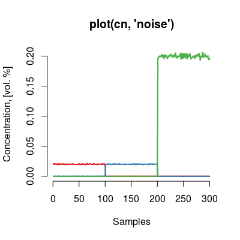

defaultParConcNoiseModel() ConcNoiseModel(...)
List of the default parameters.
Method logf.
Class ConcNoiseModel emulates perturbations in the
analyte delivery system. The noise term is a normally
distributed noise with zero-mean and diagonal covariance
matrix. The diagonal structure of the covariance matrix
underlines that the concentration noises of analytes do
not affect each other.
Get default constructor parameters of class
ConcNoiseModel.
Constructor method of ConcNoiseModel Class.
Wrapper function ConcNoiseModel.
Slots of the class:
gases |
Gas indices. |
ngases |
The number of gases. |
gnames |
Names of gases. |
concUnits
|
Concentration units external to the model, values given in an input concentration matrix. |
concUnitsInt |
Concentration units internal for the model, values used to induce the noise. |
csd |
Parameter of standard deviation used to generate the noise. The deault value is 0.1. |
cntype |
Noise type (logconc). |
cnlogf |
Scaling factor for for log-terms if
the noise type is logconc. The default value is
c(1, 1, 2). |
The logarithm term expresses an additional scaling of the amplitude applied to simulate more noise on high levels of concentration.
Methods of the class:
predict |
Generates noise into the columns of an input concentration matrix. |
csd |
Gets the noise level. |
csd<- |
Sets the noise level. |
The plot method has one type (parameter y):
noise |
Depicts the noise vectors generated by the model. |
# model: default initialization cn <- ConcNoiseModel() # get information about the model show(cn)Concentration Noise Model (csd 0.1), noise type 'logconc'print(cn)Concentration Noise Model - 3 gases A, B, C - csd: 0.1 - noise type: logconc - log-factor: 1, 1, 2plot(cn)
# model: custom parameters # - many sensors cn <- ConcNoiseModel(csd=0.5, gases=c(1, 3)) print(cn)Concentration Noise Model - 2 gases A, C - csd: 0.5 - noise type: logconc - log-factor: 1, 2plot(cn)
# method plot # - plot types 'y': noise cn <- ConcNoiseModel() # default model plot(cn, "noise", main="plot(cn, 'noise')")
# default plot type, i.e. 'plot(cn)' does the same plotting